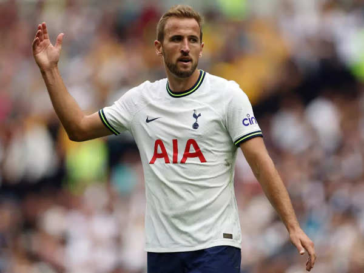

Why this season could be different
The 2022 season was turbulent for the Totenham Hotspurs. Although their season started off strong, injury woes as well as an upcoming worldcup mean't players weren't performing at their highest level. Due to this cuppled with managerial problems, spurs ended the season in 8th place, their lowest finish since the 08/09 season. Due to this under performance, Tottenham didn't qualify for any European tournaments such as the champions league or europa league. Although it was a bleak end to the season, many fans were optimistic that next season would be better, that was until Harry Kane left. Harry Kane had played for Tottenham for 19 years, joining the clubs academy when he was only 11 years old. There he flourished until he was eventually brought into the first team. The rest is history, with Kane putting up a staggering total of 280 goals while playing for LilyWhites. In other words he was the Lebron James of Tottenham, and many fans thought that without Harry Kane, the previous season woes would carry over into the 2023 season. But so far, the opposite has happened.

The start to Tottenhams 2023 season has been nothing short of perfect. With 6 wins and 2 draws in the first 8 games this season, not only are tottenham curerntly in first place, but this is also their best ever start to a season since the Premier Leagues inception in 1992. A lot of speculation could be made about the reason for this upward momentum of success, but I think two reasons stand alone from the others in being defining factors of our success. These two factors our of course, the new manager, and new signings.
The English Premier League is acclaimed for having fierce competition, thrilling matches, and most notably, legendary goalscorers who have the ability to change the game with just their presence. The 2010's saw two players who cemented their spots at the top of the goal scoring leaderboard. These two players were Sergio Aguero and Harry Kane. Aguero, playing for the sky blue of mancher city saw immense club success winning not only the premier league title numerous times, but the golden boot as well. Harry Kane on the other hand was a homegorwn talent from south london who grew up in the Tottehnham academy. he made is mark by putting up prolific numbers year after year. He recently however, left Tottenham for Bayern Munich in search of European success abroad. As this era began to wind down, and new one was fast approaching.
Pictured above is Jamie Vardy, the 2019-2020 Premier League golden boot winner. The talismanic Leicester City finisher stole the show in 2020 netting an astounding 23 goals. His unheard of work rate and clinical finishing saw him win the golden boot in fashionable style. What makes his story even more incredible is his journey from non league football to premier league stardom. Since this season, Vardy has fallen back on his form, but his record season will never be forgotten.
| Date | Milestone | Player |
|---|---|---|
| 2014/15 | 26 goals | Sergio Aguero |
| 2015/16 | 25 goals | Harry Kane |
| 2019/20 | 23 goals | Jamie Vardy |